Cache 与辅助存储器 链接到标题
Cache 概述 链接到标题
为什么使用 Cache？ 链接到标题
- 避免 CPU”空等”现象
- CPU 和主存(DRAM)的速度差异
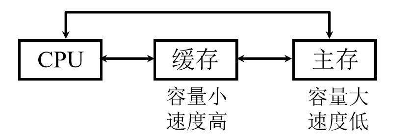
- 程序访问的局部性原理
Cache 的工作原理 链接到标题
主存和缓存的编址 链接到标题
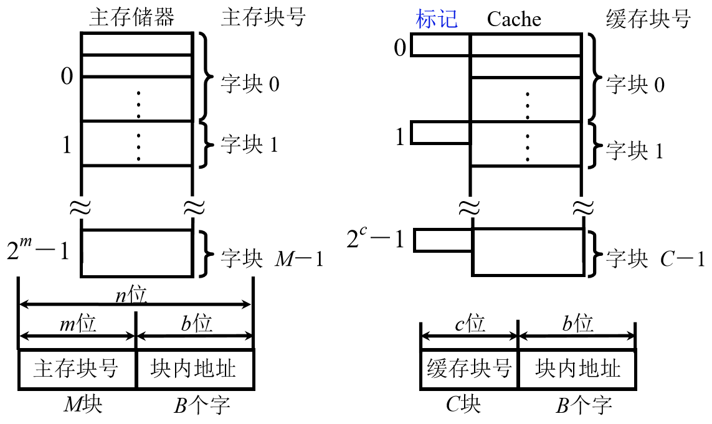
主存和缓存按块存储，块的大小相同，B 为块长。缓存的块远远小于主存的块，如果主存要和 Cache 映射，那么至少要保证主存中每块大小应与 Cache 中每块大小相同。
每个字块包含 N 个字，主存的地址应该分成两部分，一部分用来寻找某个字块，另一部分用来寻找该字块中的字或字节。
命中与未命中 链接到标题
缓存共有 C 块，主存共有 M 块，M»C.
- 命中: 主存块调入缓存，主存块与缓存块 建立了对应关系。
- 未命中: 主存块未调入缓存，主存块与缓存块未建立对应关系。
用标记记录与某缓存块建立了对应关系的主存块号。
Cache 的命中率 链接到标题
CPU 欲访问的信息在 Cache 中的比率，命中率与 Cache 的容量与块长有关，一般每块可取 4-8 个字。
块长取一个存取周期内从主存调出的信息长度。
- CRAY_1,16 体交叉，块长取 16 个存储字。
- IBM370/168，4 体交叉，块长取 4 个存储字，一个存储字 64 位，一次取 256 位。
Cache-主存系统的效率 链接到标题
效率 e 与命中率有关，e=访问 Cache 的时间/平均访问时间 100%。 _设 Cache 命中率为 h，访问 Cache 的时间为 tc，访问主存的时间为 tm，则 e=tc/h_tc+(1-h)_tm_100%.
Cache 的基本结构 链接到标题
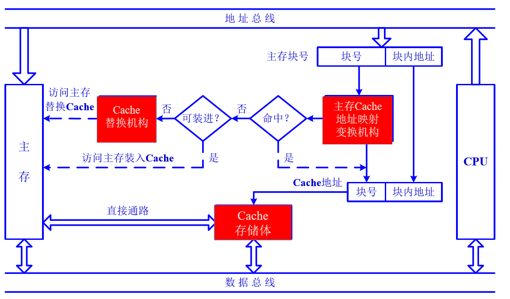
Cache 的读写操作 链接到标题
读操作 链接到标题
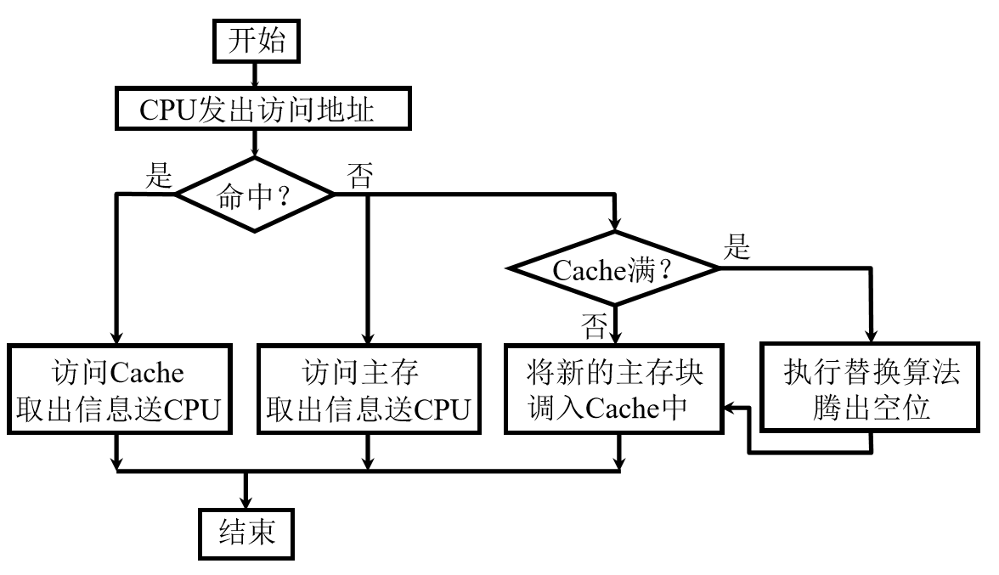
写操作 链接到标题
- 写直达法(Write-through) 写操作时数据既写入 Cache，又写入主存。 写操作时间就是访问主存的时间，Cache 块退出时，不需要对主存执行写操作，更新策略比较容易实现。
- 写回法(Write-back) 写操作时只把数据写入 Cache 而不写入主存，当 Cache 数据被替换出去时才写回主存。 写操作时间就是访问 Cache 的时间，Cache 块退出时，被替换的块需写回主存 ，增加了 Cache 的复杂性。
Cache 的改进 链接到标题
- 增加 Cache 的级数，如片载(片内)Cache,片外 Cache。
- 统一缓存和分立缓存，冯诺依曼结构将指令 Cache 和数据 Cache 统一整合，现在计算机可以将指令 Cache 与数据 Cache 分开，这个方式与指令执行的控制方式有关。
- Pentium，8K 指令 Cache，8K 数据 Cache。
- PowerPC620，32K 指令 Cache，32K 数据 Cache。
Cache-主存的地址映射 链接到标题
直接映射 链接到标题
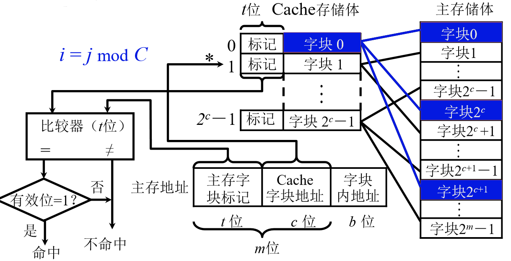
每个缓存块 i 可以和若干个主存块对应
每个主存块 i 只能和一个缓存块对应
全相联映射 链接到标题
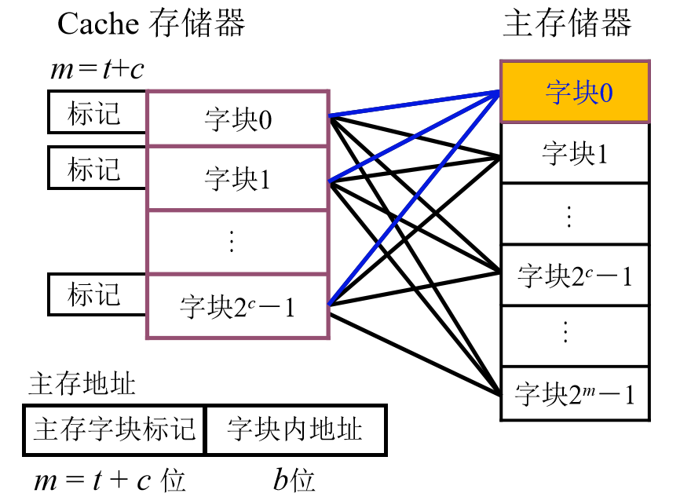
主存中的任一块可以映射到缓存中的任一块
组相联映射 链接到标题
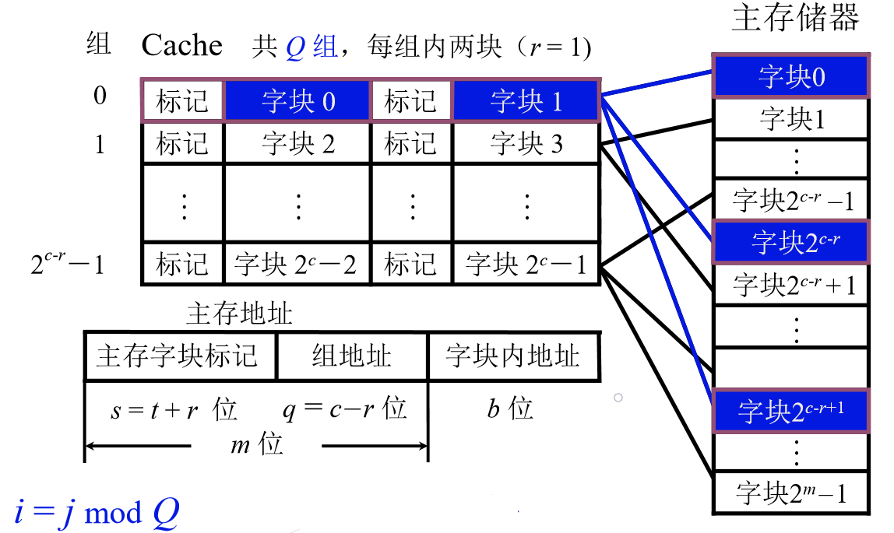
某一主存块 j 按模 Q 映射到缓存的第 i 组中的任一块，当组相联只有一组时，此时组相联映射等同于全相联映射，当每组只有一块时，此时组相联映射等同于直接映射。
替换算法 链接到标题
- 先进先出(FIFO)算法
- 近期最少使用(LRU)算法
小结 链接到标题
- 直接，某一主存块只能固定映射到某一缓存块
- 全相联，某一主存块能映射到任一缓存块
- 组相联，某一主存块只能映射到某一缓存组中的任一块
辅助存储器 链接到标题
概述 链接到标题
-
特点，不直接与 CPU 交换信息
-
磁表面存储器的技术指标
- 记录密度，道密度 Dt，位密度 Db
- 存储容量，C=n_k_s
- 平均寻址时间，寻道时间 + 等待时间
- 辅存的速度
- 寻址时间
- 磁头读写时间
- 辅存的速度
- 数据传输率，Dr=Db*V
- 误码率，出错信息位数与读出信息的总位数之比。
磁记录原理和记录方式 链接到标题
磁记录写原理 链接到标题
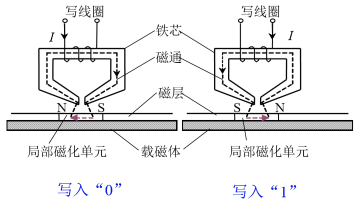
磁记录读原理 链接到标题
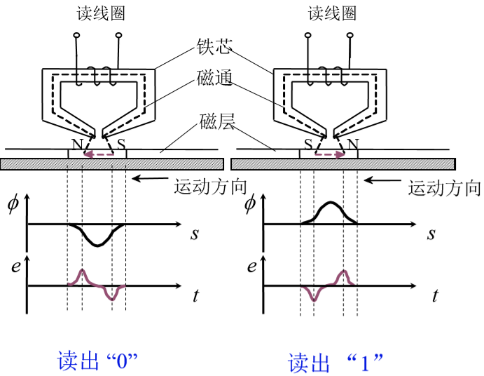
硬磁盘存储器 链接到标题
硬磁盘存储器的类型 链接到标题
- 固定磁头和移动磁头
- 可换盘和固定盘
硬磁盘存储器结构 链接到标题
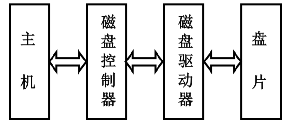
- 磁盘驱动器
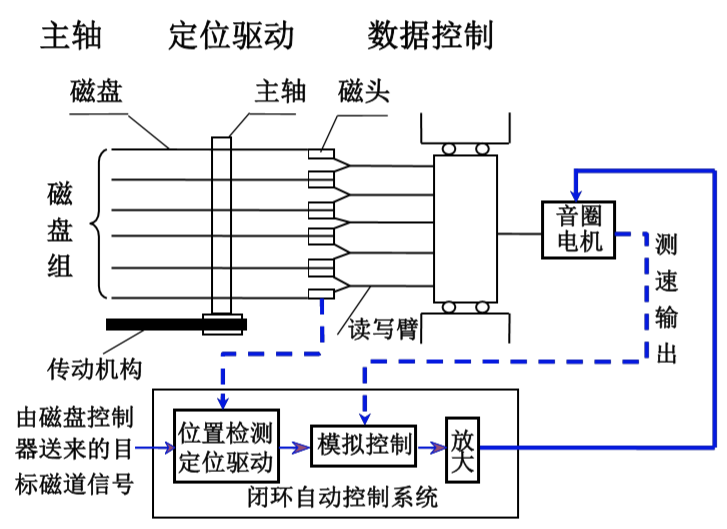
-
磁盘控制器
- 接收主机发来的命令，转换成磁盘驱动器的控制命令
- 实现主机和驱动器之间的数据格式转换
- 控制磁盘驱动器读写
- 磁盘控制器是主机和磁盘驱动器之间的接口
- 对主机，通过总线
- 对硬盘(设备)
-
盘片 由硬质铝合金材料制成
软磁盘存储器 链接到标题
概述 链接到标题
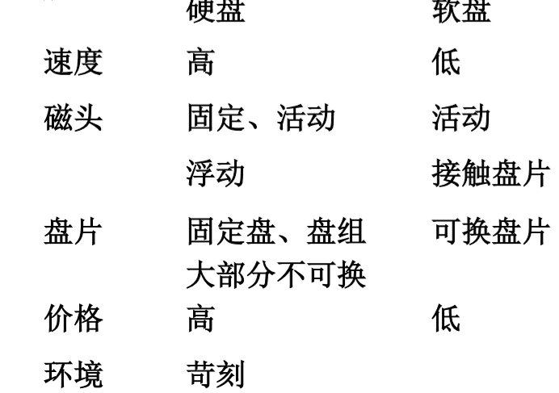
软盘片 链接到标题
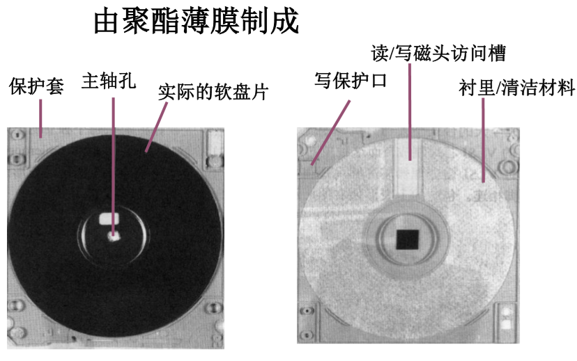
光盘存储器 链接到标题
概述 链接到标题
采用光存储技术，利用激光写入和读出
- 第一代光存储技术，采用非磁性介质，不可擦写
- 第二代光存储技术，采用磁性介质，可擦写
光盘的存储原理 链接到标题
只读型和只写一次型—热作用(物理或化学变化)
可擦写光盘—热磁效应